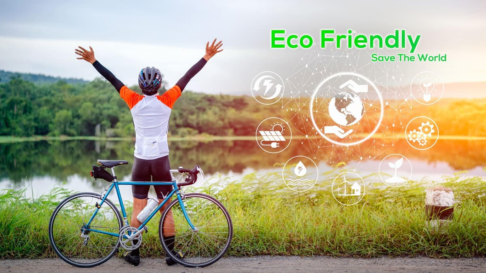

Advantages of GoCycle :
Traffic Decongestion :
"Go Cycle" contributes to reducing traffic
congestion in metropolitan areas. By promoting cycling for short
trips, it diverts a portion of commuters away from motor
vehicles, which eases road congestion. This results in smoother
traffic flow, shorter travel times for all
road users, making urban transportation more efficient
Cost Savings :
Potential for significant cost savings. By
choosing cycling over car ownership or frequent rides,
individuals can save on fuel, parking fees, maintenance, and
even public transportation costs. The affordable rental fees and
membership plans offered by "Go Cycle" make it a cost-effective
alternative, putting money back in the pockets of users.
Emission Reduction :
The service plays a crucial role in reducing harmful emissions
and improving air quality. By encouraging the use of
eco-friendly bicycles, "Go Cycle" directly reduces the number of
motor vehicles on the road. Fewer vehicles mean lower emissions
of pollutants, such as greenhouse gases and particulate matter,
contributing to a cleaner.
Traffic Safety :
"Go Cycle" promotes traffic safety by reducing the number of
motor vehicles on the road. With fewer cars and less traffic
congestion, the risk of accidents and collisions decreases.
Additionally, the service advocates safe cycling practices, such
as helmet use and following traffic rules, further enhancing
road safety for all users.
Reduced Noise Pollution :
The service contributes to reduced noise pollution in urban
areas. As cycling is a quieter mode of transportation compared
to motor vehicles, it helps create quieter and more peaceful
city streets. This reduction in noise pollution positively
impacts the quality of life for urban residents and promotes a
calmer and less stressful urban environment.
Promoting Green Transportation :
"Go Cycle" actively promotes green transportation by making
cycling accessible, convenient. It encourages
individuals to choose an eco-friendly mode of transport for
their daily commutes and short trips. This not only reduces the
environmental footprint of urban transportation but also raises
awareness about sustainable and green commut.
Reduced Limited Parking:
"Go Cycle" alleviates the burden of finding parking spots in
congested urban areas, making it a practical solution for users
who struggle with limited parking availability. This convenience
enhances the overall commuting experience by eliminating the
need for extensive searches for parking spaces.

Environmental Conservation:
The service contributes to the conservation of urban green
spaces by reducing the need for expansive parking lots and
garages, which are often a result of high car ownership rates.
"Go Cycle" supports efforts to preserve and repurpose land for
green and community spaces, enhancing the urban environment.
Promotion of Local Businesses:
The partnerships between "Go Cycle" and local businesses for
advertising opportunities create a valuable
advantage. These stimulate economic activity,
supporting local businesses and driving community engagement.
Users can explore nearby establishments, fostering a sense of
community.